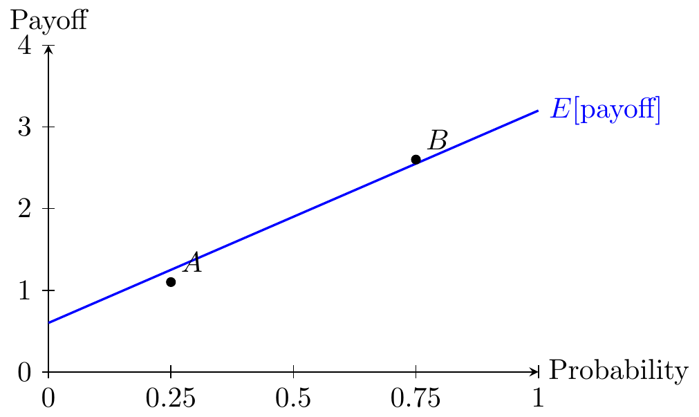
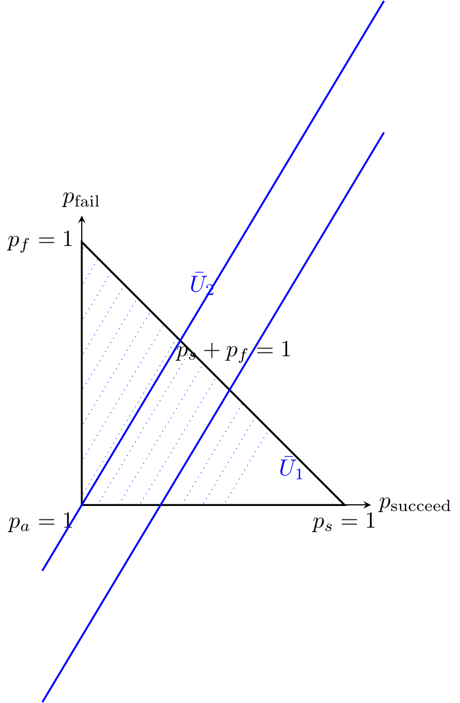
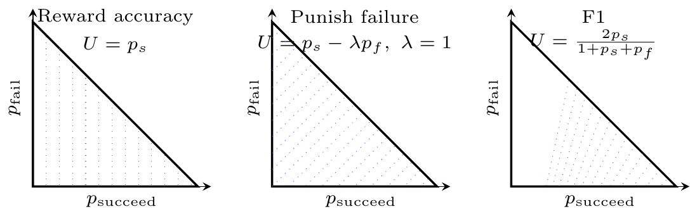
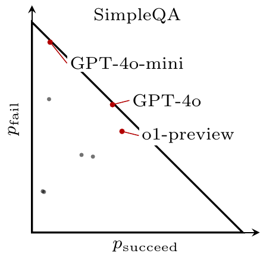

Project spec (human)
Overall goal: a blog post about why language models hallucinate, that it’s a badly-specified payoff function.
If there are important ambiguities or inconsistencies in the spec you should ask me.
Basic model:
- Canonical problem: the user has to choose between a few options (multi-choice), the LLM has probabilities on each answer.
- Distinguish LLM outputs: binary (recommend one option), ternary (can abstain), and continuous (report probabilities over options).
- The user has some outside option from not choosing, which is above choosing the wrong option. Can also extend such that they can pay a cost to get the right answer themselves.
Claims:
- Continuous output is best.
- The usefulness of a binary-output LLM to a user is convex in its avg accuracy.
- The threshold for making a claim is p^*=(_a-_f)/(_s-_f).
- Illustrate different user preferences over succeed/fail/abstain on a simplex
- Training with a reward only for accuracy encourages guessing over abstention.
Additional notes
- Related literature: cite and discuss Chow (1970) and Kalai et al. (2025); for each, list their claims precisely.
- The diagrams should be super clear. Make sure you look at the diagrams to see that they are readable.
- Plot data from different studies on simplex diagrams. Also give comments on the diagrams, on what the takewaay is about tradeoffs here, & see that’s consistent with what the original papers say.
Project plan (LLM)
Deliverable: a blog post explaining hallucinations as payoff-misalignment (user utility vs training/eval rewards), using a simple decision-theory model.
Structure:
- Setup: multi-choice question with \(k\) options; model has posterior \(p(y\mid x)\); user chooses (i) pick an option, (ii) abstain, or (iii) pay a cost to verify (optional extension).
- Outputs: compare binary (one option), ternary (option or abstain), continuous (probabilities over options).
- Core threshold: derive \(p^*=(\pi_a-\pi_f)/(\pi_s-\pi_f)\) and interpret.
- Key claims to support:
- Continuous output is (weakly) best for the user (information-loss argument).
- Binary usefulness is convex in average accuracy (kink at the abstain/use threshold).
- Accuracy-only rewards + binary grading encourage guessing over abstention; connect to Kalai et al. (2025) and Chow (1970).
- Geometry: use a Marschak-Machina simplex to visualize (a) user preferences (indifference lines) and (b) training/eval objectives.
Figures:
- 1D payoff-vs-confidence threshold plot (clean, consistent sign conventions).
- Optional verification extension plot (attempt vs verify threshold).
- Simplex with indifference grids for a few payoff ratios/objectives.
- Simplex points from multiple studies/benchmarks + short takeaways, with explicit comparability caveats.
Editing rules while executing:
- Do not edit
PROJECT-SPEC-HUMAN. - Keep notation consistent across text + figures (\(\pi_s,\pi_f,\pi_a\); typically normalize \(\pi_a=0\)).
- Do not edit
Introduction
Hallucinations are usually described as the model “making things up”. But in many applications, hallucinations are the predictable outcome of a mis-specified payoff function: the user cares about the tradeoff between being right, being wrong, and not answering (or escalating to verification), while most training and evaluation pipelines implicitly reward “answer something” much more than “know when to stop”.
This post treats question answering as a small decision problem with payoffs \((\pi_s,\pi_f,\pi_a)\) for succeed / fail / abstain. That framing connects directly to Chow’s classic reject-option rule in pattern recognition (Chow 1970), to the Marschak-Machina probability simplex, and to recent results arguing that binary evaluation systematically pressures models to guess (Kalai et al. 2025).
Basic model
Consider a multiple-choice question with \(k\) options and a hidden correct answer \(y^\star\). The model observes an input \(x\) and has a posterior distribution \(p(y\mid x)\) over options.
The user can take one of three actions:
- Answer: pick an option \(\hat y\).
- Abstain: do not answer (or defer to a safer outside option).
- Verify (optional extension): pay a cost \(c\) to obtain the correct answer by some other means.
For now, summarize payoffs as constants:
- Succeed (pick \(\hat y=y^\star\)): payoff \(\pi_s\).
- Fail (pick \(\hat y\neq y^\star\)): payoff \(\pi_f\).
- Abstain (outside option): payoff \(\pi_a\).
Assume \(\pi_s>\pi_a>\pi_f\): being right is best; abstaining is better than being wrong.
Outputs: binary, ternary, continuous
We can distinguish LLM “answer formats” by how much information they expose about \(p(y\mid x)\):
- Binary: the model returns a single recommended option \(\hat y\).
- Ternary: the model either returns \(\hat y\) or abstains.
- Continuous: the model returns (an approximation to) the full distribution \(p(y\mid x)\) over options.
Claims
A single threshold organizes abstention. If an “attempt” succeeds with probability \(p\) and fails with probability \(1-p\), then attempting has expected payoff \[ \mathrm{E}[\pi\mid \text{attempt}] = p\,\pi_s + (1-p)\,\pi_f. \] Attempting is optimal iff \(\mathrm{E}[\pi\mid \text{attempt}] \ge \pi_a\), i.e. \[ p \ge p^* \equiv \frac{\pi_a-\pi_f}{\pi_s-\pi_f}. \]
Binary usefulness is convex in average accuracy. A user with an outside option chooses to rely on a binary-output model only when \(p\ge p^*\). So the user’s value is the max of an outside option and a linear function of \(p\), which is convex.
Continuous output is (weakly) best. If the model provides \(p(y\mid x)\), the user can compute the expected payoff of each action (answer/abstain/verify) and implement the optimal policy. Any coarser output (binary or ternary) throws away information, and cannot improve expected utility.
The simplex makes preferences and objectives visible. In the Marschak-Machina simplex over \((p_s,p_f,p_a)\), user preferences correspond to indifference lines whose slope is determined by payoff ratios; training/evaluation objectives correspond to different directions in the same triangle.
Hallucinations are a consequence of the objective. Accuracy-only training rewards and binary grading make abstention suboptimal and encourage guessing. Chow (1970) derives the optimal reject rule in this exact payoff model (Chow 1970); Kalai et al. (2025) argue modern LLM pipelines effectively ignore this reject option and therefore pressure models to hallucinate (Kalai et al. 2025).
From probabilities to actions
For a multiple-choice question, suppose the user answers by choosing the MAP option \(\hat y(x)=\arg\max_y p(y\mid x)\). Under the symmetric payoff model above (only “correct vs incorrect” matters), the probability of success from attempting is \[ p_{\max}(x)\equiv \max_y p(y\mid x). \]
So the attempt-vs-abstain decision is driven by a single number: answer iff \(p_{\max}(x)\ge p^*\).
If verification is available at cost \(c\), one simple version is: verifying yields certain success with payoff \(\pi_s-c\). Then for each question the user compares three quantities:
- Attempt: \(p_{\max}(x)\,\pi_s + (1-p_{\max}(x))\,\pi_f\).
- Abstain: \(\pi_a\).
- Verify: \(\pi_s-c\).
This makes the “payoff mis-specification” point concrete: evaluation regimes that treat abstention as failure implicitly set \(\pi_a\approx \pi_f\), eliminating the region where “don’t answer” is optimal.
Convex value of a binary-output model
In the most constrained interface, a binary-output model only returns \(\hat y\) and the user cannot condition on per-question confidence (they only know the model’s average accuracy \(p\) on the relevant distribution). Then the user’s best policy is either to follow the model or to abstain, and the resulting value is \[ V_{\text{binary}}(p)=\max\Bigl\{\pi_a,\; p\,\pi_s + (1-p)\,\pi_f\Bigr\}. \]
This is the maximum of two affine functions of \(p\), so it is convex. It has a kink at the threshold \(p=p^*\): below the threshold the user abstains and additional accuracy has (locally) zero value; above the threshold, value increases linearly with accuracy. This is one reason “small accuracy gains” can feel useless until a system crosses a reliability threshold.
Why continuous output is (weakly) best
Continuous output (the distribution \(p(y\mid x)\), or any sufficiently rich summary like \((\hat y,p_{\max})\)) lets the user implement the payoff-optimal policy question-by-question: answer only when it clears their \(p^*\), abstain otherwise, and (if available) trigger verification in the middle region.
Binary and ternary outputs are strict coarsenings of the posterior: they discard information about confidence. By a standard “more information cannot hurt” argument (Blackwell ordering), a user who observes a more informative signal can always simulate a less informative one by ignoring information, but not vice versa (Blackwell 1953). So a continuous interface is weakly better than any binary/ternary interface for any fixed payoff function.
Probability-Payoff Diagram
This figure visualizes the threshold rule: as confidence \(p\) rises, the expected payoff of attempting rises linearly from \(\pi_f\) (when \(p=0\)) to \(\pi_s\) (when \(p=1\)). Abstaining yields the flat payoff \(\pi_a\). The optimal policy is to attempt when the blue line crosses the abstain line.
Optional extension: verification
Suppose the user has a way to pay a cost \(c\) to obtain the correct answer (e.g. look it up, run an expensive check, ask a human). In the simplest model, verification yields certain success with payoff \(\pi_s-c\).
Since abstaining and verifying are both “outside options” (their payoff does not depend on the model’s confidence), the only relevant outside-option payoff is \[ \pi_{\text{outside}}=\max\{\pi_a,\;\pi_s-c\}. \]
The attempt rule is the same threshold logic as before: attempt iff \[ p \ge \frac{\pi_{\text{outside}}-\pi_f}{\pi_s-\pi_f}. \]
The diagram below shows an example where verification dominates abstention (\(\pi_s-c>\pi_a\)): at low confidence the user verifies; only above a higher threshold does it become worth attempting directly.

Simplex Representation
The probability simplex has three vertices corresponding to the three pure outcomes: certain success (\(p_s=1\)), certain failure (\(p_f=1\)), and certain abstention (\(p_a=1\)). Any lottery over outcomes is a point in this triangle.
Different training/evaluation objectives induce different indifference-curve sets over \((p_s,p_f,p_a)\). The figure below contrasts three illustrative objectives.

Each point in the simplex is a lottery over outcomes: a model might succeed with probability \(p_s\), fail with probability \(p_f\), and abstain with probability \(p_a\). The panels show three different objective families:
- Reward accuracy (\(U=p_s\)): success is rewarded, but failure and abstention are treated the same. This creates pressure to guess rather than abstain.
- Punish failure (linear expected utility): failure is explicitly penalized relative to abstention, expanding the region where abstaining is optimal.
- F1 (a non-linear metric): indifference curves bend, reflecting that the metric itself builds in a particular tradeoff between attempting and being correct.
Indifference-curve slope derivation
Let \(p_s, p_f, p_a = 1-p_s-p_f\) denote the probabilities of succeed, fail, and abstain. Expected utility is
\[ U = \pi_s\, p_s + \pi_f\, p_f + \pi_a\, p_a. \]
Substitute \(p_a = 1 - p_s - p_f\): \[ \begin{aligned} U &= \pi_a \\ &\quad+ (\pi_s-\pi_a)\,p_s \\ &\quad+ (\pi_f-\pi_a)\,p_f. \end{aligned} \]
Hold \(U = \bar U\) and solve for \(p_f\): \[ \begin{aligned} p_f &= \frac{\bar U - \pi_a}{\pi_f-\pi_a} - \frac{\pi_s-\pi_a}{\pi_f-\pi_a}\,p_s. \end{aligned} \]
The slope of the indifference curve in the \((p_s, p_f)\) plane is therefore: \[ \frac{dp_f}{dp_s}\bigg|_{U=\bar U} = -\frac{\pi_s-\pi_a}{\pi_f-\pi_a}. \]
Normalizing \(\pi_a=0\), this simplifies to: \[ \frac{dp_f}{dp_s}\bigg|_{U=\bar U} = -\frac{\pi_s}{\pi_f}, \qquad p_f = \frac{\bar U}{\pi_f} - \frac{\pi_s}{\pi_f}\,p_s. \]
The slope depends only on payoff differences relative to abstain. When failure is very costly (\(|\pi_f|\) large after normalizing \(\pi_a=0\)), the curves are flatter: the decision-maker tolerates little additional failure probability in exchange for more success probability.
Implications for “alignment”
If you view hallucinations through this lens, “alignment” is not a mysterious property of model internals. It is the much more mundane question: does the model’s training and evaluation objective implement the user’s payoff function?
Practical implications:
- Expose confidence. If the user cannot observe confidence, they cannot implement the threshold rule; binary outputs force guessing.
- Score abstention explicitly. Benchmarks that collapse abstain into “wrong” implicitly set \(\pi_a=\pi_f\) and will select for guessing.
- Prefer calibrated probabilities or verification hooks. Either give users a usable \(p_{\max}\), or route medium-confidence cases to a verification workflow.
Appendix: Cross-Benchmark Outcome Table
To make cross-model plotting easier, the table below standardizes outputs from multiple benchmarks into a common schema.
| benchmark | model | p_s_pct | p_f_pct | p_a_pct |
|---|---|---|---|---|
| SimpleQA | Claude-3-haiku (2024-03-07) | 5.1 | 19.6 | 75.3 |
| SimpleQA | Claude-3-sonnet (2024-02-29) | 5.7 | 19.3 | 75.0 |
| SimpleQA | Claude-3-opus (2024-02-29) | 23.5 | 36.9 | 39.6 |
| SimpleQA | Claude-3.5-sonnet (2024-06-20) | 28.9 | 36.1 | 35.0 |
| SimpleQA | GPT-4o-mini | 8.6 | 90.5 | 0.9 |
| SimpleQA | GPT-4o | 38.2 | 60.8 | 1.0 |
| SimpleQA | OpenAI o1-mini | 8.1 | 63.4 | 28.5 |
| SimpleQA | OpenAI o1-preview | 42.7 | 48.1 | 9.2 |
| AbstentionBench | DeepSeek R1 Distill Llama 70B | 43.7 | 10.3 | 46.0 |
| AbstentionBench | o1 | 27.2 | 6.8 | 66.0 |
| AbstentionBench | S1.1 32B | 45.6 | 11.4 | 43.0 |
| AbstentionBench | Llama 3.1 70B Tulu 3 DPO | 26.1 | 6.9 | 67.0 |
| AbstentionBench | Llama 3.1 70B Tulu 3 PPO RLVF | 26.9 | 7.1 | 66.0 |
| AbstentionBench | Llama 3.3 70B Instruct | 26.5 | 7.5 | 66.0 |
| AbstentionBench | Gemini 1.5 Pro | 25.4 | 7.6 | 67.0 |
| AbstentionBench | GPT-4o | 23.3 | 7.8 | 69.0 |
| AbstentionBench | Qwen2.5 32B | 21.8 | 7.3 | 71.0 |
| AbstentionBench | Llama 3.1 8B Tulu 3 PPO RLVF | 36.8 | 12.3 | 51.0 |
| AbstentionBench | Llama 3.1 405B Instruct | 23.7 | 8.3 | 68.0 |
| AbstentionBench | Llama 3.1 8B Tulu 3 DPO | 34.8 | 12.2 | 53.0 |
| AbstentionBench | Llama 3.1 70B Instruct | 26.6 | 9.4 | 64.0 |
| AbstentionBench | Llama 3.1 70B Tulu 3 SFT | 30.1 | 12.9 | 57.0 |
| AbstentionBench | Llama 3.1 8B Instruct | 23.8 | 10.2 | 66.0 |
| AbstentionBench | Mistral 7B v0.3 | 25.5 | 11.5 | 63.0 |
| AbstentionBench | Llama 3.1 8B Tulu 3 SFT | 37.1 | 20.0 | 43.0 |
| AbstentionBench | OLMo 7B | 25.8 | 20.2 | 54.0 |
| AbstentionBench | Llama 3.1 70B Base | 25.5 | 25.5 | 49.0 |
| AbstentionBench | Llama 3.1 8B Base | 23.5 | 32.5 | 44.0 |
| Abstain-QA | GPT-4 Turbo | 66.1 | 19.7 | 14.2 |
| Abstain-QA | GPT-4 32K | 72.0 | 19.1 | 8.9 |
| Abstain-QA | GPT-3.5 Turbo | 61.1 | 37.4 | 1.5 |
| Abstain-QA | Mixtral 8x7b | 54.1 | 37.0 | 8.9 |
| Abstain-QA | Mixtral 8x22b | 59.0 | 29.1 | 11.9 |
Notes: - Table columns are constructed to look like probabilities in the \((p_s,p_f,p_a)\) simplex: \(p_s=\text{p\_s\_pct}/100\), \(p_f=\text{p\_f\_pct}/100\), \(p_a=\text{p\_a\_pct}/100\). - For SimpleQA, these correspond directly to {Correct, Incorrect, Not attempted} shares. - For the other benchmarks, these are constructed from the paper’s summary metrics to enable geometric comparisons; interpret them as a mapping into a common coordinate system, not as identical underlying evaluation protocols.
Data extraction details by source
SimpleQA (Wei et al., 2024). The table uses all model rows shown in the main SimpleQA model-comparison table (8 models). Here, p_s_pct is Correct, p_a_pct is Not attempted, and p_f_pct is computed as \(100-\text{Correct}-\text{Not attempted}\). I chose this slice because it is the paper’s canonical cross-model summary and directly exposes explicit non-attempt behavior.
AbstentionBench (Kirichenko et al., 2025). The table uses all model rows from Appendix D Table 4 (20 models). The paper reports Average Accuracy and Average Abstention Recall. I set \(p_{a,\%} = \text{Average Abstention Recall}\), interpret \(100-p_a\) as an attempt-like rate, and construct \[ p_s \approx \text{AvgAcc}\cdot(1-p_a),\qquad p_f \approx (1-\text{AvgAcc})\cdot(1-p_a), \] all expressed in percent. This is not a literal per-question abstain rate; it’s a mapping for geometric intuition using the only aggregate abstention signal reported in the table.
Abstain-QA (Madhusudhan et al., 2024). This is a deliberate subset, not all values in the paper: I take the MMLU / Standard clause / Base rows (5 models) from the main result table. The paper reports AAC (answerable accuracy) and AR (abstention rate). I set \(p_{a,\%}=\text{AR}\) and construct \(p_{s,\%}\) and \(p_{f,\%}\) by treating AAC as attempt-conditional accuracy: \[ p_s = \text{AAC}\cdot(1-p_a),\qquad p_f = (1-\text{AAC})\cdot(1-p_a), \] all expressed in percent.
Important comparability caveats. Even after mapping all results into \((p_s,p_f,p_a)\) coordinates, the underlying tasks and abstention metrics differ: SimpleQA is short-form factual QA with optional non-attempts, AbstentionBench is an abstention-focused multi-scenario benchmark with recall-style abstention metrics, and Abstain-QA is multiple-choice QA with an explicit IDK/NOTA option. So the combined table is useful for geometric intuition and directional comparisons, but not for strict leaderboard ranking across benchmarks.
Sources: ¹ SimpleQA: Measuring short-form factuality in large language models
² AbstentionBench: Reasoning LLMs Fail on Unanswerable Questions
³ Do LLMs Know When to NOT Answer? Investigating Abstention Abilities of Large Language Models
Appendix: Benchmark Points in the Simplex
The next three figures plot benchmark observations as points on a Marschak-Machina simplex using a common transformation from the table columns:
\[ p_s = \text{p\_s\_pct}/100,\qquad p_f = \text{p\_f\_pct}/100,\qquad p_a = \text{p\_a\_pct}/100. \]

Reading the simplex plots
The horizontal axis is \(p_s\) (succeed share) and the vertical axis is \(p_f\) (fail share). The remaining probability is \(p_a=1-p_s-p_f\) (abstain share), so points closer to the diagonal edge have lower abstention.
Moving down (lower \(p_f\)) corresponds to reducing failures; whether that is best depends on how much worse failure is than abstention (\(\pi_f\) vs \(\pi_a\)).
The labeled points illustrate that a model can look good under an “answer-everything” regime by pushing \(p_a\) toward zero, but that is exactly the regime that a payoff function with a harsh \(\pi_f\) would discourage.
Don’t over-interpret cross-benchmark comparisons: each source defines abstention differently, so these plots are best read as a geometric visualization of tradeoffs, not as a single unified leaderboard.
References
Angelopoulos, Anastasios N., and Stephen Bates. 2021. “A Gentle Introduction to Conformal Prediction and Distribution-Free Uncertainty Quantification.” arXiv Preprint. https://doi.org/10.48550/arXiv.2107.07511.
Bartlett, Peter L., and Marten H. Wegkamp. 2008. “Classification with a Reject Option Using a Hinge Loss.” Journal of Machine Learning Research 9 (59): 1823–40. https://www.jmlr.org/papers/v9/bartlett08a.html.
Blackwell, David. 1953. “Equivalent Comparisons of Experiments.” The Annals of Mathematical Statistics 24 (2): 265–72. https://doi.org/10.1214/aoms/1177729032.
Chow, C. K. 1970. “On Optimum Recognition Error and Reject Tradeoff.” IEEE Transactions on Information Theory. https://doi.org/10.1109/TIT.1970.1054406.
El-Yaniv, Ran, and Yair Wiener. 2010. “On the Foundations of Noise-Free Selective Classification.” Journal of Machine Learning Research 11 (53): 1605–41. https://www.jmlr.org/papers/v11/el-yaniv10a.html.
Geifman, Yonatan, and Ran El-Yaniv. 2019. “SelectiveNet: A Deep Neural Network with an Integrated Reject Option.” In Proceedings of the 36th International Conference on Machine Learning, 97:2151–59. Proceedings of Machine Learning Research. https://proceedings.mlr.press/v97/geifman19a.html.
Gneiting, Tilmann, and Adrian E. Raftery. 2007. “Strictly Proper Scoring Rules, Prediction, and Estimation.” Journal of the American Statistical Association 102 (477): 359–78. https://doi.org/10.1198/016214506000001437.
Herbei, Radu, and Marten H. Wegkamp. 2006. “Classification with Reject Option.” The Canadian Journal of Statistics 34 (4): 709–21. https://doi.org/10.1002/cjs.5550340410.
Kadavath, Saurav, Tom Conerly, Amanda Askell, Tom Henighan, Dawn Drain, Ethan Perez, Nicholas Schiefer, et al. 2022. “Language Models (Mostly) Know What They Know.” arXiv Preprint. https://doi.org/10.48550/arXiv.2207.05221.
Kalai, Adam Tauman, Ofir Nachum, Santosh S. Vempala, and Edwin Zhang. 2025. “Why Language Models Hallucinate.” arXiv Preprint arXiv:2509.04664 (September). https://doi.org/10.48550/arXiv.2509.04664.
Shafer, Glenn, and Vladimir Vovk. 2008. “A Tutorial on Conformal Prediction.” Journal of Machine Learning Research 9 (12): 371–421. https://www.jmlr.org/papers/v9/shafer08a.html.